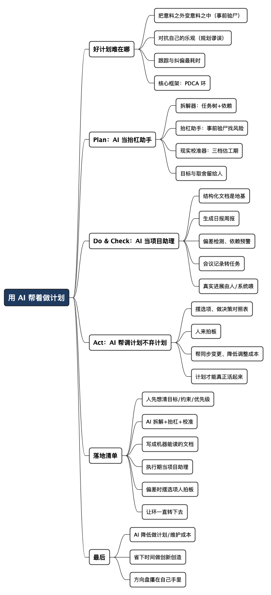

用 AI 做好计划之一：把 PDCA 环转起来
Posted on 四 06 8月 2026 in AI
| Abstract | 用 AI 做好计划之一：把 PDCA 环转起来 |
|---|---|
| Authors | Walter Fan |
| Category | learning note |
| Version | v1.0 |
| Updated | 2026-08-06 |
| License | CC-BY-NC-ND 4.0 |
用 AI 做好计划之一：把 PDCA 环转起来
“凡事预则立，不预则废。”这句老话我信了大半辈子，可我也承认，做计划这事儿常常费力不讨好。
你花一个下午，把目标、里程碑、任务、依赖、风险、应对措施一条条列清楚，自我感觉良好。然后呢？第二天需求变了，第三天有人请假，第四天上游接口延期——计划上那些漂亮的甘特图，第一周就开始跟现实对不上了。于是很多人干脆不做计划：反正“计划赶不上变化”，做了也白做。
我年轻时也这么想过，直到后来带项目、做 service owner，被现实教育了：不做计划的团队，不是没有计划，而是把计划的成本从事前挪到了事中——到了关键时刻手忙脚乱，那才是真的贵。
艾森豪威尔有句被引用烂了的话：“Plans are worthless, but planning is everything.”（计划本身没什么用，但做计划的过程无比重要。）这话他 1957 年在一次国防动员会议上说的，还特意声明是早年在军队里听来的，不是他原创。我年轻时觉得这是句绕口的废话，现在越咂摸越有味道——你写下来的那份文档会过期，但你在做计划时被迫想清楚的那些东西，不会。
那问题就来了：既然做计划这么重要又这么累，能不能让 AI 帮我们扛掉那些又累又机械的部分，把人的精力省下来，放到真正需要判断和创造的地方？
我的答案是能，但有前提。下面把我这段时间摸索出的做法讲讲——不是“让 AI 替你做计划”，而是“你主导、AI 助攻，一起把 PDCA 环转起来”。
先想明白：好计划到底难在哪
在谈 AI 之前，得先承认做计划难，难在三个地方。这三个地方，管理学和心理学其实早就研究透了，只是我们平时没工夫细想。
第一难，是把“意料之外”提前变成“意料之中”。 好计划不是把顺利的路径画一遍，而是把可能出岔子的地方也想到。这在项目管理里叫风险识别，在心理学里有个更狠的词，叫“事前验尸”（pre-mortem）：Gary Klein 提出的做法——不等项目失败再复盘，而是一开始就假设“它已经黄了”，倒过来问一句“它是怎么黄的”。这一问，往往能逼出一堆你原本不愿意面对的风险。
第二难，是对抗人自己的乐观。 我们做计划时天然会低估时间和成本，这叫规划谬误（planning fallacy），Kahneman 和 Tversky 早就写进书里了。你以为三天能干完的事，多半要五天。经验丰富的人也躲不掉，只是躲的姿势好看点。
第三难，也是最要命的，是跟踪和纠偏。 计划写完只是开头，真正耗时间的是：定期回看进度、发现偏差、判断要不要调整、怎么调整、调整完再通知相关人。这套动作枯燥、琐碎、需要反复做，绝大多数计划就是死在这一步——不是错，是没人有精力持续维护它。
计划失败，很少是因为一开始想错了，多半是因为后来没人管了。 做计划累在事前，维护计划累在事中——而事中那份累，恰恰是 AI 最能帮忙的地方。
这三难，正好对应管理学里那个转了几十年还没过时的老框架：PDCA 环（Plan 计划 → Do 执行 → Check 检查 → Act 处置/改进）。它最早由 Walter Shewhart 提出、戴明（Deming）推广开来，所以也叫“戴明环”；戴明晚年更喜欢叫它 PDSA（Study 研究），意思相近。它的精髓不在“计划”，而在那个“环”字——计划不是写一次就完，而是不断执行、检查、纠偏，转一圈再转一圈。
AI 的价值，就在于帮你把这个环转得更快、更省力。咱们一段一段看。
Plan：让 AI 当你的“抬杠助手”
做计划这一步，最忌讳的是让 AI 替你拿主意。你要是丢一句“帮我做个下季度的项目计划”，它能唰唰给你一大篇，四平八稳、条理清晰、一看就是网上通用模板——正确，但跟你的实际情况没半点关系。
正确的姿势是反过来：核心目标、约束、优先级你来定，让 AI 帮你把它拆细、挑刺、补全。 AI 在这一步最好用的三个角色：
拿一个性能优化冲刺举例子。你是这个迭代的项目经理：目标是“把 XX 服务的 P99 延迟从 800ms 降到 300ms”，两周后上线，不许动架构。目标、约束、优先级都在你脑子里，你要做的只是让 AI 帮你把活拆细、把雷排掉。
角色一：拆解器。 你给一个粗目标，让它帮你拆成可执行的任务树，并且标出任务之间的依赖关系。比如：
我：本季度要把 XX 服务的 P99 延迟从 800ms 降到 300ms。
帮我拆成任务清单，标出依赖关系和大致工作量，
并指出哪些任务可以并行、哪些必须串行。
它拆出来的东西你不会照单全收，但它能帮你避免漏项——那些你心里知道、但列的时候容易忘的琐碎任务。以项目经理的直觉，这一步最值钱的还不是拆得细，而是它顺手标出来的依赖和外部前置条件——那些“你要等别人”的环节，往往是计划里最容易漏的雷。
角色二：抬杠助手（也就是前面说的“事前验尸”）。 这是我觉得 AI 在计划阶段最被低估的用法。把你的计划丢给它，然后下一道命令：
假设这个计划三个月后彻底失败了。
请你扮演一个悲观的资深工程师，列出 10 个最可能导致它失败的原因，
按发生概率从高到低排，并对每一条给出一个预防措施。
AI 天然“见多识广”，它见过的项目失败模式比你我加起来都多。它列的 10 条里可能有 3 条不着调，但剩下 7 条里，只要有一条戳中你没想到的盲点，这一步就值了。这是用 AI 对冲你自己的乐观偏差。 就拿上面那个性能冲刺来说，它列出的失败原因里有一条是“压测环境审批要三个工作日”，而你的计划里压根没给环境申请留时间——这一条就值回票价了。
角色三：现实校准器。 针对规划谬误，你可以让它帮你做个粗略的时间反推：
这些任务我估计两周做完，你觉得靠谱吗？
请按乐观/正常/悲观三种情况分别估一个工期，并说明差异来自哪里。
它给的数字别当圣旨，但那个“悲观情况”常常比你的“正常情况”更接近真相。你拍脑袋“两周够了”，它悲观档给你 3.5 周。你不爱听，但心里有数了：至少该给“环境审批”这种外部依赖设个里程碑，而不是当它理所当然。
一句话概括这一步：
你负责“想要什么”和“拍板”，AI 负责“帮你想全”和“帮你唱反调”。 计划的灵魂——目标和取舍——必须留在你手里，外包不得。
Do & Check：让 AI 当那个“不嫌烦的项目助理”
计划落地，最难的不是执行本身，而是执行过程中的信息同步和进度盯梢。这活儿枯燥、重复、还得天天做，人做久了必然懈怠——但这恰恰是 AI 的主场。
我现在的做法，是把计划变成一份结构化的、机器能读的文档（Markdown 表格或者 YAML 都行，别用截图和纯文字），让 AI 能反复读它、更新它、对着它提问。比如一份简单的任务清单：
| 任务 | 负责人 | 计划完成 | 进度 | 风险/备注 |
|---|---|---|---|---|
| 压测基线 | A | 08-10 | 60% | 环境待批 |
| 缓存改造 | B | 08-18 | 0% | 依赖压测结果 |
| 灰度上线 | C | 08-25 | 0% | - |
有了这份结构化的计划，AI 能帮你干这些原本要你手动做的活儿：
- 生成日报/周报草稿。 “根据这份清单和这周的进展记录，写一份三段话的周报，突出风险项。”省下的是每周雷打不动的那半小时。
- 偏差检测。 “今天是 08-19，对照计划完成时间，哪些任务已经延期或有延期风险？”它会把该红的地方给你标红。
- 依赖预警。 “缓存改造依赖压测结果，压测已经延期，帮我推算这会不会影响灰度上线的时间。”这种连锁反应，人一忙起来最容易忽略。
- 会议纪要转任务。 把一段散乱的站会记录丢给它，让它抽取出“谁、要做什么、什么时候完成”，直接更新进计划。
把镜头拉到冲刺里的一个具体场景。周三站会散会，四个任务里有三个回答是“还行”“在弄”“快好了”——你心里清楚，这几句说明不了任何问题。你让 AI 对着任务表算了一遍，跳出三条：压测基线落后两天、缓存改造依赖它周五联调大概率泡汤、环境审批还在走流程。它顺手把周报草稿也写了：三段话，本周进展、风险预警、需要的支持。你改两分钟就发进干系人群。从“想不起来看计划”到“每天有人帮你算好”，靠的就是把计划变成一张能算的表。
这里有个我自己踩过的坑，得提醒一句：AI 帮你算、帮你提醒，但进度更新这件事，源头得是真实的。 你不能让 AI 猜任务做没做完——它会一本正经地瞎猜。真实进展必须由人（或者由系统，比如 CI、监控、工单系统）喂给它，AI 只做加工和提醒，不做数据源。Garbage in, garbage out，做计划也逃不过这条铁律。
AI 是个永远不嫌烦、不会漏、不会累的项目助理，但它不是现场的眼睛。 现场发生了什么，得由人告诉它；它擅长的是根据你告诉它的，帮你算清楚、盯到位、说明白。
Act：让 AI 帮你“调计划”，而不是“弃计划”
PDCA 里最见功力的一步是 Act——发现偏差之后，怎么处置。是硬扛、是调工期、是砍范围、是加人，还是干脆认怂重做？这一步是纯粹的判断，AI 替不了你拍板，但它能帮你把选项和后果摆清楚，让你拍板拍得更明白。
作为项目经理，你知道延期本身不可怕，可怕的是拍错方向，让整个团队白忙一场。比如压测延期了三天，你可以问它：
压测延期 3 天，现在有三个选择：
1) 灰度上线也顺延 3 天；
2) 压测和缓存改造并行推进（有返工风险）；
3) 砍掉本期缓存改造，只做基础优化先上线。
帮我分别分析每个选择的利弊、风险和对最终目标的影响。
它给你的不是答案，是一张决策对照表。你扫一眼，心里就有谱了：顺延发布窗口会连累依赖它的下游项目，并行有返工风险，砍掉缓存改造则本期目标缩水。你拍了板——先保灰度上线，缓存改造挪到下个迭代。比起一个人对着屏幕干着急，这里省掉的是纠结的时间，而纠结，才是延期真正的隐藏成本。
调整完之后，AI 还能帮你做那件最烦人的事——把变更同步出去：更新计划文档、生成一段给相关方的变更说明、把新的时间线和风险重新梳理一遍。这些沟通成本，恰恰是很多人不愿意调整计划的真正原因（“改一次太麻烦了，将就着来吧”），而 AI 能把这个麻烦降到几乎为零。
这一点我觉得特别重要：当调整计划的成本变低，人才会愿意频繁调整；而愿意频繁调整，计划才真正“活”了起来，才配得上艾森豪威尔那句 planning is everything。 一份从不更新的计划，跟没有计划其实差不多。
落地清单：人主导，AI 助攻
说了这么多，把这套做法浓缩成一个能直接抄的流程：
-
计划前，人先想清三件事。 我到底要什么（目标）？有哪些死约束（时间、人力、预算）？什么最重要（优先级）？这三样别让 AI 替你想。
-
让 AI 拆解 + 抬杠 + 校准。 拆任务树、做“事前验尸”找风险、用乐观/正常/悲观三档校准工期。它帮你想全、帮你唱反调。
-
把计划写成机器能读的结构化文档。 Markdown 表格或 YAML，字段清楚：任务、负责人、时间、进度、风险。进度用完成百分比量化，这是后面所有自动化的地基。
-
执行期让 AI 当项目助理。 自动生成日报周报、检测延期、预警依赖连锁反应、把会议记录转成任务。但真实进展由人/系统喂给它，AI 不当数据源。
-
偏差出现时，让 AI 摆选项，人来拍板。 让它生成决策对照表，你做判断；调整后让它帮你同步变更、更新文档、通知相关方。
-
让这个环转起来，别停。 Plan → Do → Check → Act → 再 Plan。AI 把每一圈的机械成本压低，你就更愿意多转几圈。拿冲刺复盘说：每个迭代末的回顾会，让 AI 把“做得好 / 要改进 / 下个迭代要做”整理成清单，直接作为下个迭代 Plan 的输入——PDCA 转完一圈又接上了。很多团队做回顾只是走个过场，这一步让复盘真正回到计划里。
一句话记住它：
AI 帮你转 PDCA 的“环”，你守住 PDCA 的“心”。 环是那些重复的拆解、盯梢、同步、纠偏——交给 AI；心是目标、取舍、判断和拍板——留给自己。
一次小型复盘：别让计划只停在漂亮的表格里
如果没有完整的项目数据，可以先拿一个两周内能结束的小目标练手。计划里只保留五列：任务、负责人、完成条件、依赖、风险。执行中每天只更新事实，不让 AI 猜进度；到了复盘时，再让 AI 对照原计划回答三个问题：哪一项最早出现偏差、哪个依赖被低估、哪一个风险本来可以提前验证。
这一步的价值不在于生成一份更漂亮的计划，而在于形成一条可追溯的链：当时为什么这样计划，后来发生了什么，下一轮应该改哪一个假设。 如果计划每次都只是被动改日期，说明你还没有真正进入 Act 环节，只是在给延期换一种字体。
最后一句
回到开头那个矛盾：计划总会过期，可做计划的过程无比重要。
AI 没有解决这个矛盾，它做的是另一件事——把“做计划”和“维护计划”这两件又累又机械的苦差事的成本大幅拉低，低到你愿意一遍遍去做、去调、去纠偏。计划文档还是会过期，但你转动 PDCA 环的那份“planning”能力，被 AI 放大了。
省下来的时间干嘛？别拿去开更多的会。拿去做那些 AI 替不了的事——想清楚“我们到底要往哪儿走”，以及在没人给标准答案的地方，创新和创造。
毕竟，AI 能帮你把路修得更平，但往哪儿走，方向盘还得攥在你自己手里。
这是“用 AI 做好计划”三部曲的第一篇（心法）。想看具体工具和怎么封装成自己的 Skill，去第二篇兵器谱：《趁手的工具与 Skill》；想让 PDCA 环自动转起来，去第三篇：《配个不睡觉的监工》。
全文思维导图
@startmindmap
<style>
mindmapDiagram {
node {
BackgroundColor #F8F9FA
RoundCorner 10
Padding 10
FontSize 13
}
:depth(0) {
BackgroundColor #1E3A5F
FontColor white
FontSize 18
FontStyle bold
}
:depth(1) {
FontSize 15
FontStyle bold
}
:depth(2) {
FontSize 13
}
}
</style>
* 用 AI 帮着做计划
** 好计划难在哪
*** 把意料之外变意料之中（事前验尸）
*** 对抗自己的乐观（规划谬误）
*** 跟踪与纠偏最耗时
*** 核心框架：PDCA 环
** Plan：AI 当抬杠助手
*** 拆解器：任务树+依赖
*** 抬杠助手：事前验尸找风险
*** 现实校准器：三档估工期
*** 目标与取舍留给人
** Do & Check：AI 当项目助理
*** 结构化文档是地基
*** 生成日报周报
*** 偏差检测、依赖预警
*** 会议记录转任务
*** 真实进展由人/系统喂
** Act：AI 帮调计划不弃计划
*** 摆选项、做决策对照表
*** 人来拍板
*** 帮同步变更、降低调整成本
*** 计划才能真正活起来
** 落地清单
*** 人先想清目标/约束/优先级
*** AI 拆解+抬杠+校准
*** 写成机器能读的文档
*** 执行期当项目助理
*** 偏差时摆选项人拍板
*** 让环一直转下去
** 最后
*** AI 降低做计划/维护成本
*** 省下时间做创新创造
*** 方向盘攥在自己手里
@endmindmap

本作品采用知识共享署名-非商业性使用-禁止演绎 4.0 国际许可协议进行许可。 欢迎在我的个人网站 https://www.fanyamin.com 访问原文并评论。